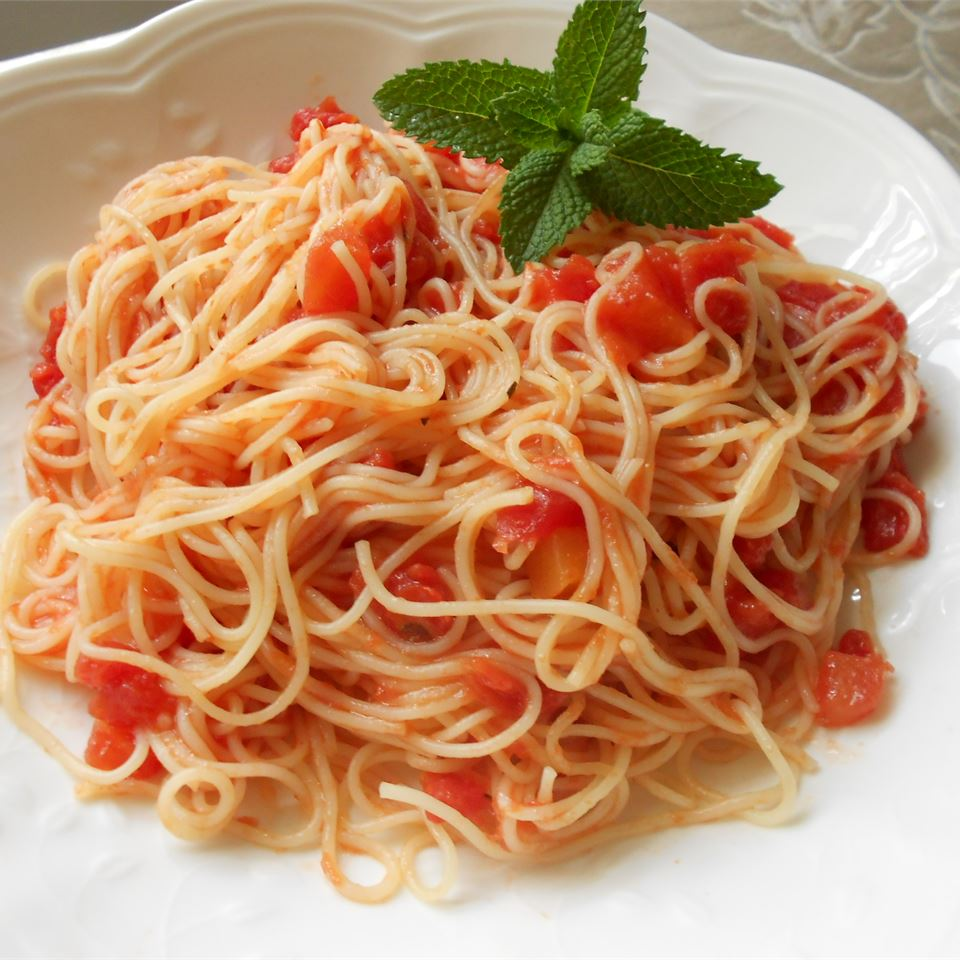

<!DOCTYPE html>
<html lang="en">    
</html>

<head>
    <meta charset="utf-8">

    <title>Pasta recipe</title>
</head>

<body>
    <h1>Tomato and Garlic Pasta</h1>
    

    <p><strong>Description:</strong>Fresh tomatoes, garlic, and basil are any Italian-lovers' favorite flavors,<br>
    and this recipe has all three of those ingredients. There's nothing better<br>
    than fresh tomatoes, but if you're in a pinch, you can use canned.</p>

         <h4>Ingredients:</h4>
         <ul>
            <li>1 (8 ounce) package angel hair pasta</li>
            <li>2 pounds tomatoes</li>
            <li>4 cloves crushed garlic</li>
            <li>1 tablespoon olive oil</li>
            <li>1 tablespoon chopped fresh basil</li>
            <li>1 tablespoon tomato paste</li>
            <li>salt to taste</li>
            <li>ground black pepper to taste</li>
            <li>¼ cup grated Parmesan cheese</li>
         </ul>

         <h4>Steps:</h4>
         <ol>
            <li>Place tomatoes in a kettle, and cover with cold water. Bring just to the boil.<br>
                 Pour off water, and cover again with cold water. Peel. Cut into small pieces.</li>
            <li>Cook the pasta in a large pot of boiling salted water until al dente.</li>
            <li>In a large skillet or saute pan, saute the garlic in enough olive oil to cover the bottom of the pan.<br>
                 The garlic should just become opaque, not brown. Stir in the tomato paste. Immediately stir in the tomatoes,<br>
                  and salt and pepper. Reduce heat, and simmer until the pasta is ready; add the basil.</li>
            <li>Drain the pasta, but do not rinse in cold water. Toss with a couple of tablespoons of olive oil, and then mix into the sauce.<br>
                 Reduce the heat as low as possible. Keep warm, uncovered, for about 10 minutes when it is ready to serve.<br>
                  Garnish generously with fresh Parmesan cheese.</li>
            <li>VARIATIONS: Saute fresh quartered mushrooms with the garlic, or add shoestring zucchini along with the tomato.</li>
         </ol>

</body>